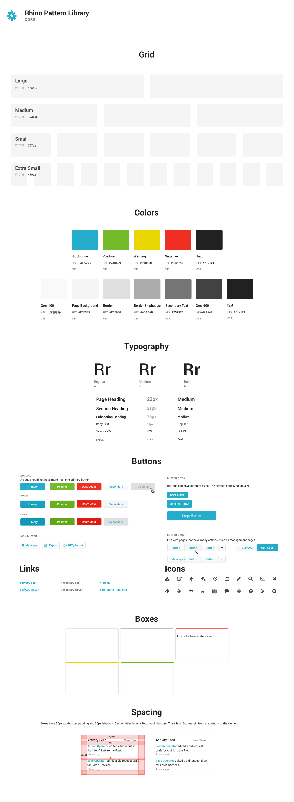
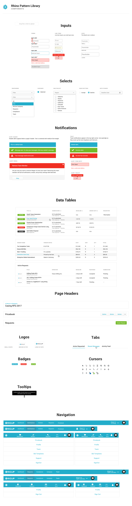

As the first designer on the team, I brought design culture to the organization and built its pattern library and brand from the ground up.
View LiveI joined RigUp early on as their only designer, where shipping fast to validate ideas were priority. Creating a design language wasn’t critical at this stage, but a year later I was leading a design team, and the site had quickly reached a level of complexity where our design debt was affecting our efficiency.
I determined that we were wasting time creating existing interface components - leading to an inconsistent user experience and bloating our code base with redundancy.
I subsequently put together an interface inventory that enabled us to visualize the overall state of our design language. It was clear that we needed to prioritize our core components first - things like the grid system, colors, typography, buttons, and spacing.
 The pattern library is an ongoing process, and we have just begun the gradual implementation of its core components. It has already proved valuable as a common ground for designers and developers to reference the rationale behind design decisions, as well as understand context and use cases of patterns.